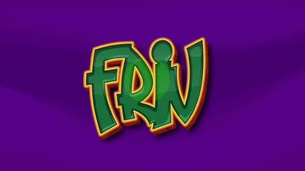
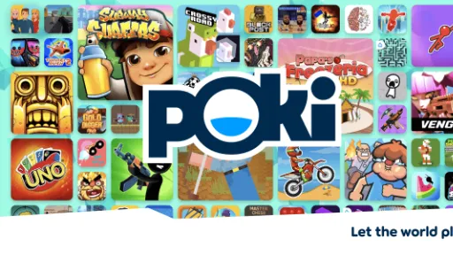

Y8
Friv
CrazyGames
Poki
Webgames, også kendt som online-spil, er spil, der kan spilles direkte i en webbrowser uden behov for at downloade eller installere yderligere software. De er tilgængelige på en bred vifte af platforme og genrer, fra enkle puslespil og arkadespil til avancerede multiplayer-spil.
Webgames har en række fordele, herunder tilgængelighed, da de kan spilles på næsten enhver enhed med internetforbindelse. De er også ofte gratis eller tilbyder en freemium-model, hvor grundlæggende spil er gratis, men avancerede funktioner kan købes. Dette gør dem populære for både erfarne og nye spillere.
Derudover er webgames ofte opdateret med nyt indhold og funktioner, hvilket holder spillet friskt og interessant. De tilbyder også mulighed for at konkurrere med spillere fra hele verden, hvilket fremmer social interaktion og konkurrenceånd.
Webgames er en sjov og bekvem måde at underholde sig selv, fordrive tiden og udfordre ens færdigheder på.
Har du fundet en stavefejl? Mangler der et link? Er der et link der ikke virker? Kontakt vores support her.